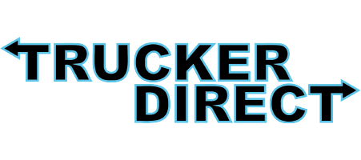

Je definieert een concept voor een interactief mediaproduct als antwoord op het probleem van de klant.
DEFINIËREN
Het concept wordt visueel gepresenteerd (geïnspireerd op bestaande voorbeelden) en getest (op basis van een aangereikte testmethode) met eindgebruikers.
PROBLEEM VAN DE KLANT
Analyseer een aangereikte voor gestructureerde design challenge en doelgroep door een debriefing te maken.
CONCEPT
Een duidelijke verklaring en strategie over de doelgroep, business value en haalbaarheid.
TRUCKERDIRECT
Wij hebben niet echt een klant als maar een eigen bedrijf opgezet wat men kan inhuren om het verbeteren van producten van A naar B te tranporteren. Via usertesten heb ik uitgezocht wat truckers, die het product in de toekomst kunnen gebruiken, gevraagd wat zij handig vinden in soortgelijks product. Deze usertesten kunt u vinden met bijgevoegde link.Allereerst hebben we met de groep samen een DEVTOOLS gemaakt, zodat duidelijk te zien was wie en wat ging doen de komenee tijd. Ik had niemand anders vanuit media om samen mee te werken, dus kwam alles vanuit die hoek op mij aan. Het is aan de ene kant makkelijk dat je maar alleen bent en met niemand rekening hoeft te houden, maar aan de andere kant was het wel handig geweest om iemand te hebben om mee te sparren. Gelukkig heb ik redelijk verstand van Multimedia dus vond ik het niet zo groot probleem om dingen als logo en huisstijl te bedenken. Het moeilijk kwam meer aan in tijdsmanagement. Maar daar heb ik ook een oplossing in gevonden. Eerst zal ik uitleggen wat ik allemaal gedaan heb in de defineer fase. Toen we de devtools hebben aangemaakt, zijn we daarna begonnen met een definiotion of done LINK
Ik heb daarna allerlei logo's aan het uitzoeken geweest van andere verschillende transportbedrijven.
Voor deze fase wil ik u verwijzen naar deze pagina. LINK
Ook heb ik websites opgezocht om te kijken wat andere bedrijven gebruiken om een soortgelijks product te kunnen maken. Na dit allemaal uitgezocht te hebben, ben ik naar de doelgroep gaan kijken en vooral naar de Truckergroep. Deze moeten makkelijk en snel informatie op hun scherm kunnen krijgen en ik had in gedachten dat ze niet moesten worden verblind door een wit scherm. Zeker niet als ze s'nachts een rit willen bekijken.
Deze 4 ontwerpen heb ik door 2 BUSINESS Studenten laten testen met truckers die zij kennen. Deze usertesten zijn opgenomen en is een transscripts van gemaakt, zodat je het gemakkelijk kan terugzien. 1 Design kwam eruit als de beste, maar toch had ik besloten, samen met de groep om 1 kleur te veranderen omdat ik vond dat die duideliker was.
